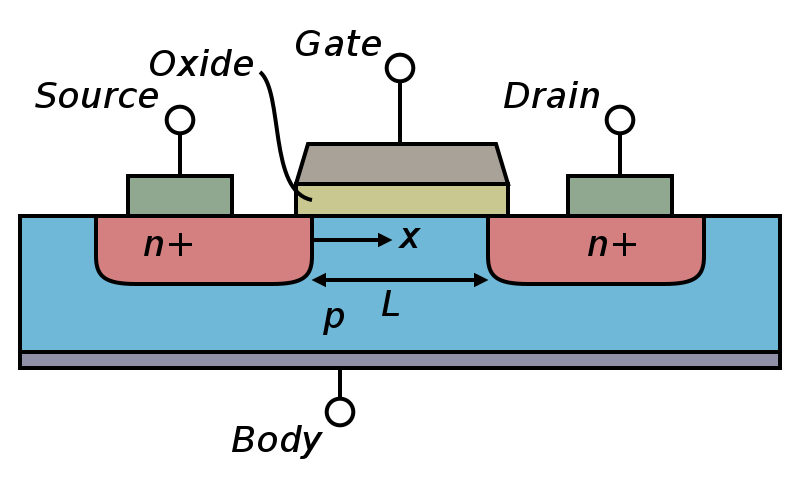
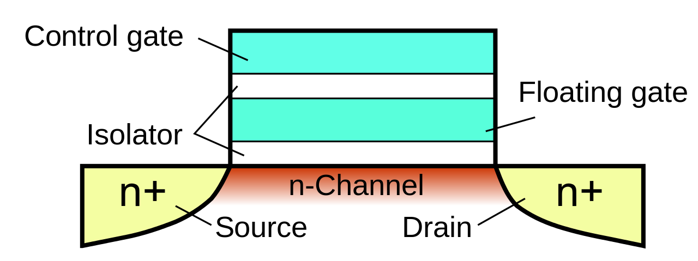

1. Computer electronic components
1.1. Capacitors
A capacitor is a pair of metal plates that is used to store an electric charge. The metal plates are separated by an oxide (= non conductive material) and are usually rolled together in a cylinder to gain space. It acts similarly to a battery, can be charged and discharged. But unlike batteries which use a chemical reaction to store electrical energy, the capacitor directly uses the electrons and keeps them on one of the metal plates while the other one is depleted (electrons are removed).
Here is its schematic symbol
One of its advantages is that it can be charged and discharged very fast; as compared for example to a battery. Capacitors are heavily used in electronics boards when filtering electronic signals for example.
1.2. Transistors
The transistor is the most important electronic component for electronics and computers. It forms the basis of almost all logic operations on data and is also used for storing data (for example, in SRAM memories).
A transistor is basically a 3 terminal device that acts as an electronic switch.
| Example of a push-switch represented by its schematics. |
Like a switch, it has an input (left terminal on the above schematics), output (right terminal) and a control terminal (the push mechanism on top). In one position (when open) no electric current can flow from input to output terminals and in the other position a current can freely flow from input to output.
In a transistor, the push part of the switch is actually determined by the voltage (i.e. charge) applied on the control terminal.
1.3. MOSFET transistors
The typical implementation of a transistor for computer and logic operations is the so-called MOSFET transistor (Metal Oxide Semiconductor Field Effect Transistor). These are using the properties of semiconductor materials to implement the switch behavior by stacking 3 different materials:
- A semiconductor (typically silicon)
- An oxide (typically Silicon oxide for large technologies)
- A metal on top
This stack of materials gives part of the name to the transistor (the MOS part).
|  |
|---|
| Physical representation of a MOSFET transistor. |
The three terminals of a MOSFET transistor are usually called the Drain and Source (for input/output terminals) and the Gate terminal, that acts as the switch control. When a given voltage (which value is given by transistor intrisic characteristics) is applied on the gate, the Source/Drain connection becomes like a wire. The fourth connection on the image above (Body) is not necessary in most of the cases and is usually wired to the source. The n+ and p corresponds to the doping type of the semiconductor, which will determine the type of the transistor (see below MOSFET types).
1.3.1. MOSFET types
There exists two main types of MOSFET transistors that we call n-type and p-type MOSFETs. Without going into the details of why we call them like this, the main difference is that a n-type MOSFET will let the current flow from Drain to Source only when a positive voltage is applied on its gate. The p-type will do so only when a negative voltage is applied on its gate (with respect to the source terminal voltage).
In electronics we usually represent devices with symbols. Here are the symbols for the nMOSFET and pMOSFET transistors.
The p and n letters corresponds to the doping of the semiconductor, such as Silicon, used for these devices. Implanting atoms that have more electrons (n type) or less electrons (p type) than Silicon allows to modify the electrical properties of the semiconductor. See the Wikipedia article on semiconductor doping and the Wikipedia article on MOSFETs for more information.
1.4. Floating-gate transistors
The electronic component that forms the basis of a flash memory is called a Floating gate transistor (FG Transistor). It is a MOSFET transistor with the MOS structure -- that contains the gate of the transistor -- modified. Instead of having the three-layer structure metal-oxide-semiconductor; we have a five-layer structure: metal-oxide-metal-oxide-semiconductor (MOMOS). The structure is represented in the following image.

The middle part is composed of a metallic gate, that is stacked over an insulator (usually, an oxide such as silicon oxide) on top of a second metallic part -- called the floating-gate -- on top of another insulator layer of a slightly different thickness which in turn is placed over the semiconductor substrate that form the backbone of the transistor.
1.4.1. Principle of operation
The FG transistor works a bit like a capacitor: its floating gate part can be electrically charged or discharged. Basically, when the floating gate of the transistor is charged, the transistor is passing -- it lets the current flow from its source to drain terminals. When the floating gate is not charged, it is blocking. This way, we can encode bit 1 (FG charged) or 0 (FG discharged).
But, if the principle is similar to the capacitor, why do capacitors inside DRAMs loose their charge after a while and need a refresh mechanism whereas FG transistors do not?
The answer lies in the physical principle that is at play in a floating-gate transistor.
1.4.2. Physical principle
The FG transistor is different from a capacitor: the electrons that are stored in the floating gate are forced into this area using a different physical principle than when charging a capacitor.
When charging a capacitor, you typically apply a voltage between its terminals in order to move electrons from one plate to the other. Electrons are flowing through metallic plates and metallic wires -- conductive materials.
To charge the floating-gate of a FG transistor, you apply a large voltage on its gate terminal while also applying a voltage on its source terminal. While a large voltage on the gate of the transistor opens its channel so that electrons can flow from source to drain, it also produces an electric field inside the MOMOS structure so that electrons are attracted to the gate terminal. Because of the oxide layers -- that are electrically insulating materials -- electrons cannot flow from source to gate. But if the voltage is large enough, and the oxide layer is thin enough, a physical phenomenon can occur that allows electrons to jump from the semiconductor to the metal of the floating-gate -- passing through the oxide layer. This phenomenon is called quantum tunnelling.
When some electrons were able to jump from the semiconductor into the floating-gate, and we remove the voltages, they have no more the possibility to jump back to the semiconductor, because no more "large" voltage is applied. They stay here forever. That is what makes the Flash memories persistent.
1.5. Logic circuits
Using only transistors, we can already implement data processing using logic operations. Let's look at several examples of implementation of logic operations using transistors.
Electronics uses mainly the charge storage for processing data. As you probably know, data is stored and processed in binary numbers in computers and electronic circuits. Then a given charge (for example, 5 volts) will indicate a high signal (corresponding to bit 1) and a zero charge will indicate a low-signal (bit 0). So, in logic electronic circuits we usually have a high-signal voltage source, often called Vdd (usually corresponding to 5V) and a low-signal voltage source, often called Vss (usually corresponding to 0V).
It is important to note that we usually try to reduce the energy loss in an electronic circuit (for example, to save battery life of a laptop computer). This means, we need to reduce the power dissipations which highly depend on the current that flows in the circuit. In logic parts of an electronic chip, the voltages (Vdd and Vss) are used to represent binary signals and only the voltage values will play a role in the logic (not the currents).
The logic circuits that are implemented using n-type and p-type MOS transistors are called Complementary Metal Oxide Semiconductor logic circuits (CMOS logic), see MOSTFET Transistors.
1.5.1. AND Gate
The AND Gate is a logic gate, an electronic component that can perform logic operations on the voltage it is applied on its input pins. It allows to apply the AND logic operation on its two input pins.
Here is the electronic schematics of the AND gate:
We can see that pretty simply, the only possibility to have a high voltage at the output (Out) is to have both A and B signals high. If one of them is low, the Vdd signal will not be able to come to the Out, but one of the Vss will pass through the PMOS transistors of the bottom. This represents the AND logic.
1.5.2. OR Gate
The OR Gate is a logic gate, an electronic component that can perform logic operations on the voltage it is applied on its input pins. It allows to apply the OR logic operation on its two input pins.
Here is the electronic schematic of the OR gate:

|
|---|
We remark that the last piece on the right is an inverter (NOT gate). Inputting a high-signal on either A or B or both of them will activate the bottom nMOS transistors which will drain the low-signal from Vss to the inverter gate, while one of the pMOS transistors will be in a blocking state because of the one high-signal on either A or B. The inverter will invert the signal to the high-signal (Vdd). The only way to have a low-signal at the end of this circuit is to input low-signal on both A and B. This is thus the definition of the OR operator.
On this gate, the two nMOS transistors of the left part are in parallel (that is, each one is connected so that the signal at the output of the pair of transistor is Vss only if one of them is passing). The pMOS transistors are connected in series; such that the output depends on the state of both transistors.
1.5.3. NOT Gate
An inverter is a simple electronic component, part of the logic gate family of components, that inverts a signal. If we have a high-signal on one side of this component (bit 1, or 5V) we'll have a low-signal on the output (bit 0, 0V).
Connecting two MOSFET transistors of the different types in a row between Vdd and Vss (as shown below), and connecting the two gates of the transistors together as the input of the component, we'll have the output that inverts the signal. Inputting a positive voltage (Vdd), the pMOS transistor will be blocking, preventing current to flow from the upper Vdd to the output, but the nMOS transistor will be passing, making the output signal at the level of Vss. Conversely, inputting a 0 voltage (Vss), the pMOS will be passing (because the voltage on the gate will be negative with respect to the source, which is at Vdd) making the output signal to Vdd and the nMOS will be blocking.

|
|---|
1.6. More advanced logic circuits
1.6.1. DRAM Cell (for RAM storage)
The DRAM is the main memory used as a working memory in computers. The fundamental building block of a DRAM is composed of a transistor -- that allows addressing the bit for reading / writting -- and a capacitor -- that stores the information. Its electrical schematic is shown below.

|
|---|
This consists of what is called a memory cell. Storing a bit -- 1 or 0 -- means charging or discharging the capacitor in this memory cell. To read the content of a cell, the transistor is opened and the capacitor current charge is read. These memory cells are usually arranged in a rectangle that can go to thousands of cells in width and height.
Due to inherant characteristics of capacitors, these devices are prone to electrical leakage and easily discharge over time. This has to be compensated by constantly re-writing the data stored in a DRAM. This is usually done every tenth of miliseconds (see the JEDEC standard).
When starting a program on a computer, the operating system loads the entier program instructions from the hard drive into the DRAM memory. It is then executed from this memory and into the processor, transiting by the processor's cache memory.
1.6.2. SRAM Cell (for processor cache storage)
The Static Random Access Memory (SRAM) is the main memory used as cache memory in processors. Its fundamental building block is composed of 6 transistors, that are connected to form 2 logic inverters (using 4 transistors) and 2 control transistors allowing to access the data for reading and writing. Below is the electrical schematic representing an SRAM cell.

|
|---|
Its working principle is easier to understand if we separate the different components. First, the M5 and M6 transistors are used to read/write the SRAM cell value (see below schematics). When a sufficient voltage is present on the WL line (called the "Word Line"), it opens the M5 and M6 transistors such that the signal on BL-bar line is the Q-bar signal and the signal on the BL line is the Q signal.
Q is the signal that corresponds to the SRAM cell state (0 or 1), and Q-bar is the opposite (1 or 0). If the value stored (Q) is 1, the BL line will be used to read the SRAM cell value (1), and BL-bar line will be used to check that we are correctly reading the value (should be 0 on this line). Conversely, if the value Q is 0, it'll be read on the BL line and should be 1 on the BL-bar line.
Now, on the internal structure of the SRAM are 4 transistors that are arranged to form two inverters in a loop: the output of the first one is fed into the input of the second and vice-versa. Here is the schematics of the internal cell part (left) that is decomposed into the two inverters (right):
The inverter is presented in the section about the Not Gate.
To write a bit into the memory cell, the couple of inverters are forced into a state, either with
As opposed to the DRAM memory, SRAM do not need any refresh mechanism as long as the power is maintained in the circuit. When the inverters are in a given state, it will stay as long as the power is maintained: when the output of the first inverter is high, the input of the second inverter is high, which generates a low-signal at its output. This low-signal is directed again to the input of the first inverter.
This memory is more expansive and faster, so it is usually not used as the main memory of computers but rather as the processor cache memory.